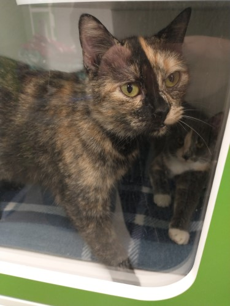
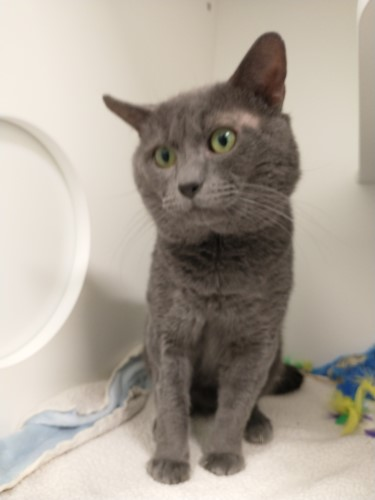
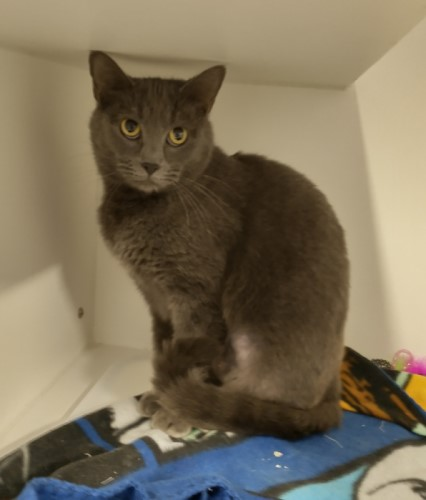

Madison
Fun and playful
Cute bell that dings
Six month old tuxedo cat
Adopt Madison
Taffy and Reese
Climbing enthusiasts
Favorite hobby: naps
Looking for a new roomie
Adopt Taffy or Reese

Whoopie
Ten years old
Chill + fluffy cat
Naps the day away
Adopt Whoopie
Kit Kat
Ten weeks old
Gentle and relaxed
Domestic house cat
Adopt Kit Kat
Addison
Six months old
Makes funny faces
Gray + brown tabby cat
Adopt Addison

Clyde
Nine weeks old
Domestic house cat
Perfect for your family
Adopt Clyde
Pixie
Purrs softly
Six months old
DSH + gray tabby
Adopt Pixie
Zena and Zo
Young bonded pair
Multi-colored tabbys
Purrfect for the holidays
Adopt Zena and Zo
Tater
Could be a model
Whiskers for days
Gorgeous green eyes
Adopt Tater
Della
Beautiful lady
Two year old tabby
Looking for a home
Adopt Della